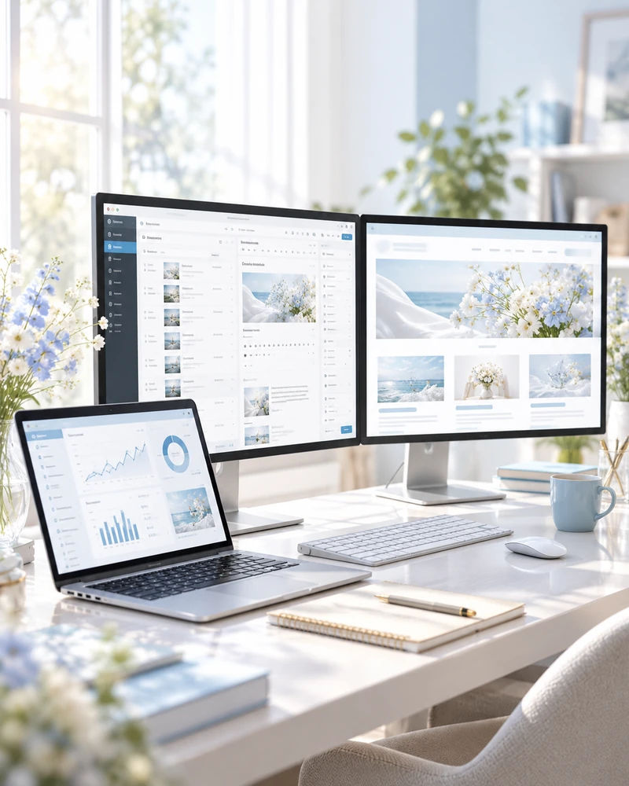

WORKS
WORKS
制作実績
デザインとコーディングで、想いをカタチにした6つの作品をご紹介します。
LUMÉRA / AYA CAFE / Maison de Pomme / POKKE / AYA YOGA / Lumière Jelly
掲載作品はすべて自主制作です。VIEW SITEは新しいタブで開きます。
ABOUT
あなたの想いを表現する。
はじめまして。
Aya Creator です。
Webサイトを制作する中で、デザインがカタチになっていく面白さや、新しいことを学ぶ楽しさに魅了されました。
そして、日々進化するAI技術に触れるたび、Webとクリエイティブの可能性がさらに広がっていくことに、ワクワクしています。
これまでの営業経験で培った、お客様の想いやご要望をくみ取る力を大切にしながら、あなたのためのWeb制作を心がけています。
美しいだけで終わらない。
伝えたい魅力がきちんと届き、集客やお問い合わせにつながること。
そして、お客様と一緒に考え、新しい可能性を見つけていくこと。
そんなWebクリエイターでありたいと思っています。
SKILLS
- Web Design
- HTML
- CSS
- JavaScript
- WordPress
- AI Creative
QUALIFICATIONS保有資格
- Webクリエイター能力認定試験 エキスパート
- 生成AIパスポート
- 宅地建物取引士
SERVICE AREA対応地域
- 富山県・石川県：訪問でのご相談に対応
- 全国：Zoom・Google Meetによるオンライン対応
- 英語：チャットでのご相談に対応
WHAT I CAN DO
まずは、お客様のお話を
丁寧に伺うことから。
Web Design & Development
ランディングページ制作・コーディング、ホームページ制作、WordPressを活用したサイト構築。

Website Maintenance
既存サイトの更新・修正、コンテンツの改善や運用サポート。
SNS & AI Creative Support
SNS活用のご相談や、生成AIを取り入れたクリエイティブ制作・業務効率化のサポート。